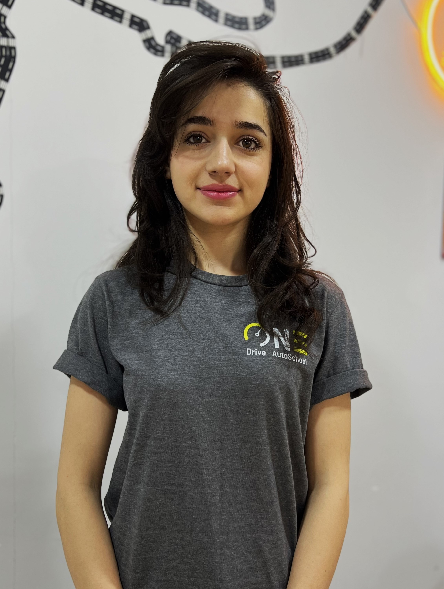
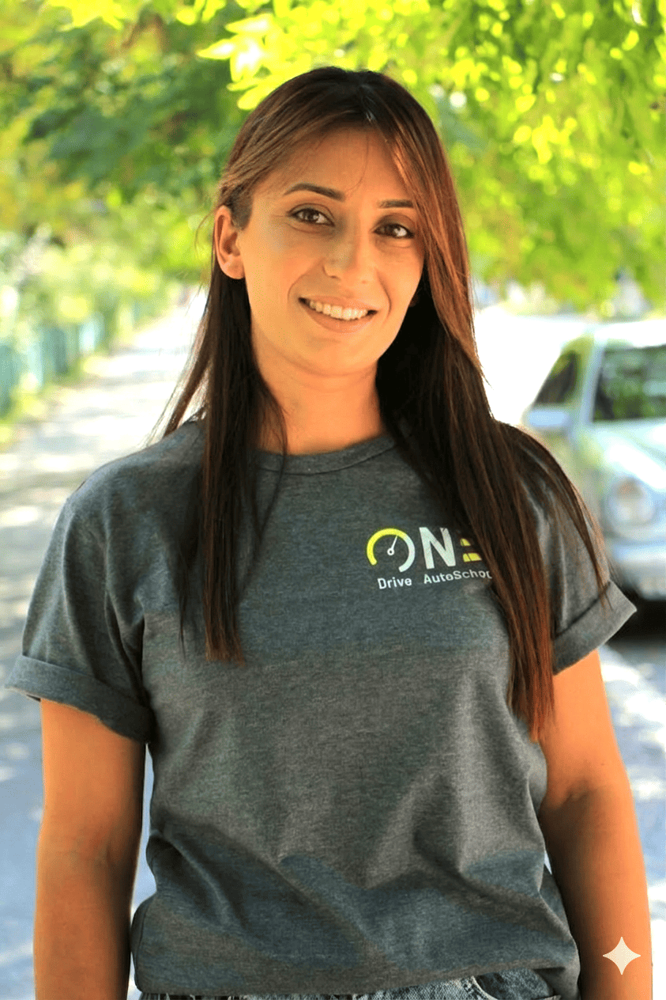

ԲԱՐԻ ԳԱԼՈՒՍՏ
ONEDrive
Ավտոդպրոց
Ժամանակակից ուսուցում, պրոֆեսիոնալ հրահանգիչներ, վստահ վարում
Ընտրեք թեստի տեսակը
Մենք ավելի քան 6 տարի դասավանդում ենք անվտանգ և վստահ վարորդական վկայականի դասընթացներ: Ժամանակակից մոտեցում, Պրոֆեսիոնալ դասախոսներ և հազարավոր գոհ ուսանողներ։
8000+
Ուսանողներ
Ավելի քան 8000 մարդ հաջողությամբ ավարտել է ուսուցումը և ստացել է իր վկայականը
6 տարվա
Փորձառություն
Ավտո դպրոցի հինգ տարվա կայուն գործունեություն և անընդհատ զարգացում
100%
Դասախոսներ
Հավաստագրված դասախոսներ՝ լայն գործնական փորձով
24/7
Աջակցություն
Ճկուն դասացուցակ և ուսանողների աջակցություն բոլոր փուլերում

Մեր աշխատակիցները
Մեր պրոֆեսիոնալ թիմը ապահովում է բարձր որակի ուսուցում և անհատական մոտեցում յուրաքանչյուր ուսանողի։

Տիգրան Սիմոնյան
Գործադիր տնօրեն / ՃԵԿ դասախոս
Մելինե Վարդանյան
ՃԵԿ դասախոս
Գայանե Կոնջորյան
Համակարգող
Արեն Աթոյան
Հրահանգիչ
Նազելի Աղազարյան
Հրահանգիչ
Սամվել Օչինյան
Հրահանգիչ
Վահագն Քալաշյան
ՀրահանգիչՏեսական քննությանը մասնակցելու համար պետք է վճարել 3000 ՀՀ դրամ։ Վճարումը կարող եք անել քննական բաժանմունքում տեղադրված վճարային տերմինալներով կամ առկա բանկի մասնաճյուղերում։
ՓաստաթղթերըՀայաստանի Հանրապետության քաղաքացիները պետք է ներկայացնեն անձնագիր կամ նույնականացման քարտ (ID CARD)։
Ինչ լեզուներով կարելի է քննություն հանձնելՏեսական քննություններն անցկացվում են հայերեն, ռուսերեն, անգլերեն, պարսկերեն կամ արաբերեն:
Քննության բովանդակային մասըՏեսական քննություններն անցկացվում են 2 մասից բաղկացած համակարգչային թեստերի միջոցով`
1. հոգեբանական թեստ: 2. գիտելիքների ստուգման թեստ: Հոգեբանական թեստՀոգեբանական թեստը բաղկացած է պատասխանի 2-5 տարբերակ պարունակող 3 հարցերից։ Օրինակ՝
Քննություն հանձնողը պարտավոր է ճիշտ պատասխանել 3 հարցերին։
Նույնիսկ մեկ սխալի դեպքում չի թույլատրվում անցնել հաջորդ փուլ։
Գիտելիքների ստուգման թեստԳիտելիքների ստուգման թեստը կազմված է պատասխանի 2-5 տարբերակ պարունակող 20 հարցերից։
Տեսական քննությունը համարվում է դրական հանձնված, եթե քննություն հանձնողը գիտելիքների ստուգման թեստի հարցերից առնվազն 18-ին տվել է ճիշտ պատասխան։
Թեստի հարցերին պատասխանելու համար տրվում է 30 րոպե ժամանակ, որը լրանալուց հետո թեստի լրացումը դադարեցվում է:
Գիտելիքների ստուգման թեստերի հարցաշարը բաղկացած է հետևյալ բաժիններից` 1. հարցեր «Ճանապարհային երթևեկության անվտանգության ապահովման մասին» օրենքից (յուրաքանչյուր թեստում` 2 հարց), 2. հարցեր Հայաստանի Հանրապետության կառավարության 2007 թվականի հունիսի 28-ի «Հայաստանի Հանրապետության ճանապարհային երթևեկության կանոնները և տրանսպորտային միջոցների շահագործումն արգելող անսարքությունների և պայմանների ցանկը հաստատելու մասին» N 955-Ն որոշման՝* ճանապարհային երթևեկության կանոնները (յուրաքանչյուր թեստում` 15 հարց), * տրանսպորտային միջոցների շահագործումն արգելող անսարքությունների և պայմանների ցանկը (յուրաքանչյուր թեստում` 2 հարց), 3. հարցեր երթևեկության մասնակիցների կյանքի անվտանգության և պատահարների դեպքում առաջին օգնության և ինքնօգնության քայլերի վերաբերյալ (յուրաքանչյուր թեստում` 1 հարց):
Գործնական քննություն կարող են հանձնել այն անձինք, ովքեր հաջողությամբ հանձնել եմ տեսական քննությունը։ Եթե տեսական քննությունից անել է մեկ տարուց ավել ժամանակ, ապա տեսական քննությունը պետք է նորից հանձնել։
Եթե անձը ունի վարորդական իրավունքի վկակայական, ապա նոր կարգ ավելացնելու համար կարող է չհանձնել տեսական քննություն ու միանգամից անցնել գործնական քննության։
Սակայն D կարգի վկայական ստանալու համար, անձը պետք է հանձնի և տեսական և գործնական քննություն՝ անկախ վկայականի առկայությունից։
ՎճարըԳործնական քննությն համար պետք է վճարել 13000 ՀՀ դրամ։
«B», «B1», «BE», «C», «CE», «C1», «C1E», «D», «DE», «D1» և «D1E» կարգերի ու ենթակարգերի տրանսպորտային միջոց վարելու հմտությունները ու վարքագիծը քննությունների միջոցով ստուգելու ժամանակ վարորդի թեկնածուները պետք է ցույց տան, որ կարող են անվտանգ վարել՝ բավարարելով հետևյալ պահանջները՝
1) նախապատրաստվել երթևեկությունը սկսելուն (hարմարեցնել նստատեղն այնպես, որ ստացվի ճիշտ նստած դիրք, hարմարեցնել հետին տեսանելիության հայելիները, ամրագոտիները, գլխակալները (առկայության դեպքում), ստուգել, թե արդյոք դռները փակ են, ստուգել անվադողերի, ղեկանիվի, արգելակների, հեղուկների (օրինակ՝ շարժիչի յուղը, սառեցնող հեղուկը, դիմապակին լվանալու հեղուկը), լույսերի, անդրադարձիչների, ուղղության ցուցիչների և ձայնային ազդանշանման սարքի վիճակը: Տրանսպորտային միջոցի բեռնային բեռնախցիկի դռները, սրահի փակված լինելը, կապակցման մեխանիզմները, արգելակը և էլեկտրական միացումները (միայն «BE» կարգերի համար): Ստուգել ուժեղացմամբ արգելակման և ղեկավարման համակարգերը, ստուգել անիվների, անիվների պնդօղակների, անվածածկոցների, հողմապակու, ապակեմաքրիչների վիճակը, ստուգել օդի ճնշումը, խտացված օդի բալոնները և օդաճնշական կախոցները, ստուգել տրանսպորտային միջոցի բեռնային բեռնախցիկի դռները, սրահի փակված լինելը (առկայության դեպքում), ստուգել կապակցման մեխանիզմները, ինչպես նաև արգելակը և էլեկտրական միացումները (միայն «CE», «C1E», «DE», «D1E» կարգերի ու ենթակարգերի համար)),
2) սկսել երթևեկությունը (գործարկել շարժիչը, անջատել կայանման արգելակը, միացնել թարթիչը, առանց շարժիչը հանգցնելու սահուն սկսել երթևեկությունը),
3) երթևեկելը՝ կայանելուց, ճանապարհից դուրս գալուց հետո, երթևեկելն ուղիղ ճանապարհներով, այդ թվում՝ փակ տարածքներում, երթևեկելը ճանապարհի ոլորաններով, խաչմերուկները հատելը՝ ճանապարհների հատումներին և միացումներին հասնելն ու դրանք հատելը,
4) առանց շարժիչը հանգցնելու, 20 սմ-ից ոչ ավելի հետ գլորում թույլ տալով սահուն շարժվելով սկսել երթևեկությունը վերելքի վրա,
5) սահմանափակ լայնությամբ տեղամասում առանց շարժիչը հանգցնելու և սահմանափակ լայնությամբ տեղամասի սահմանագծից դուրս գալու հետին փոխանցման մեկանգամյա միացումով կատարել հետադարձ,
6) կատարել երթևեկույան գոտիների փոփոխություն,
7) վազանցը (անցնելը)` տրանսպորտային մյուս միջոցներին վազանցելը (հնարավորության դեպքում), խոչընդոտների, օրինակ` կայանած մեքենաների կողքով վարելը,
8) կատարել շրջադարձ,
9) կատարել հետադարձ,
10) կանգնեցնել ավտոմոբիլը (միացնել թարթիչը, հանգցնել շարժիչը, կայանման արգելակ, փոխանցման տուփի լծակ):
- ⏰Աշխտաժամ:8:00 - 20:00
- ✉️Էլ. հասցե: onedrive.vanadzor@gmail.com